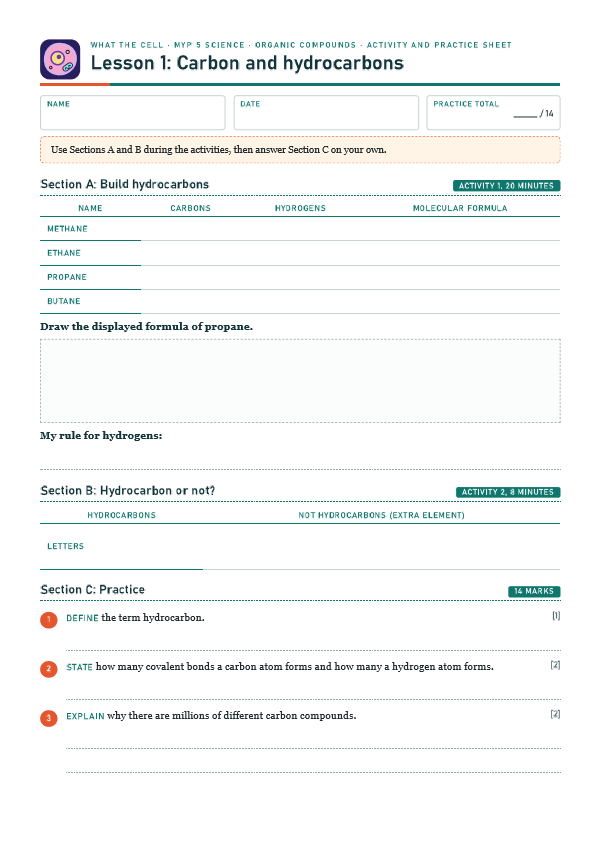

By the end of the lesson you can
- Define organic compounds and hydrocarbons
- Explain why carbon forms so many compounds
- Build models and draw displayed formulas of simple hydrocarbons
- Describe how crude oil formed and why it is a finite resource
Keys: arrows or a presentation clicker move the slides, F for full screen. Slides with a red dot have a video or simulation.
Videos (all 5 minutes or less)
- 2:56
Coal, Oil and Gas Hydrocarbons
FuseSchool. While you watch: What are fossil fuels made from? Slide 9.
Simulations
- Lab
- PhET
PhET Build a Molecule
PhET, University of Colorado Boulder. Try the tasks on the simulation slide.
Print and practise

Activity and practice sheet
Used in the lesson’s activities, with practice questions. Your teacher has the answers.
Download (PDF)Lesson 1 slides
All 20 slides in one file, to read again or print. The video buttons on the slides open YouTube.
Download the slides (PDF)Revising? The Revision tab on the unit page has the unit notes and review.
Notes: Carbon and hydrocarbons
organic compound
A compound whose molecules are built round carbon atoms. There are millions: fuels, plastics, medicines, foods and the molecules of life.. For example: glucose, ethanol, polythene, DNA.
covalent bond
A shared pair of electrons holding two atoms together; drawn as a line. For example: C–H.
hydrocarbon
A compound made of hydrogen and carbon atoms only; no oxygen, no other elements. For example: ethanol (C2H5OH) is NOT a hydrocarbon: it contains oxygen.
finite resource
It formed over millions of years, so once used it cannot be replaced in a human lifetime. For example: crude oil, natural gas, coal.
Key words
| organic compound | a compound built round carbon atoms |
|---|---|
| hydrocarbon | a compound of hydrogen and carbon only |
| crude oil | a mixture of many hydrocarbons formed from ancient sea life |
| fossil fuel | a fuel formed over millions of years from dead organisms |
| finite resource | one that will run out |
| covalent bond | a shared pair of electrons, drawn as a line |
| displayed formula | a drawing showing every atom and bond |